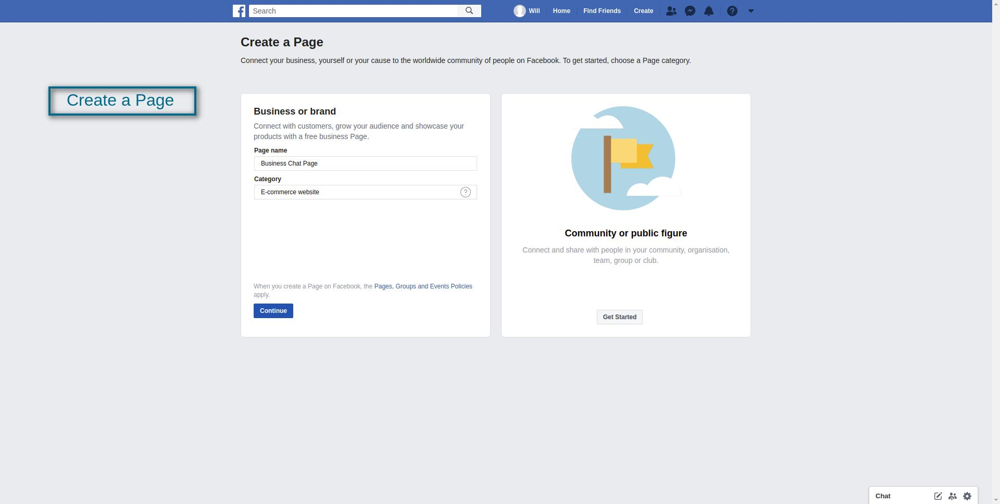
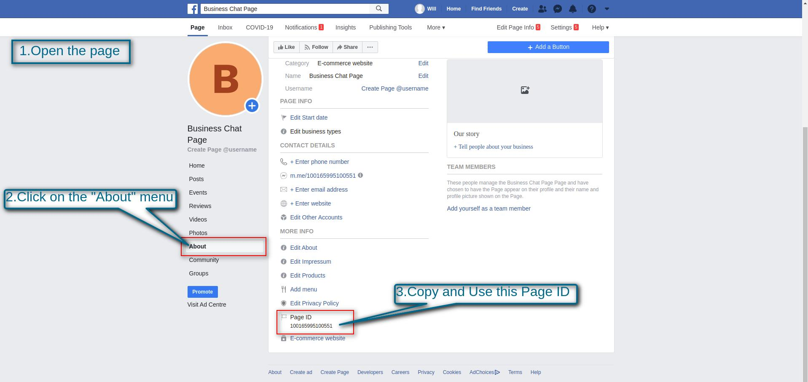
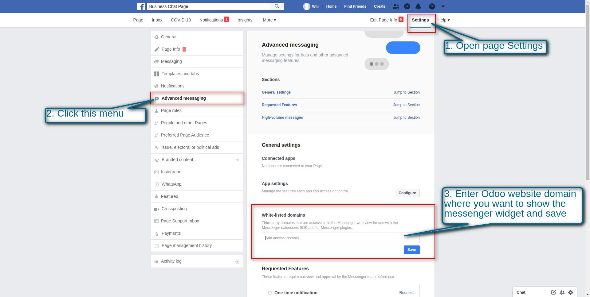
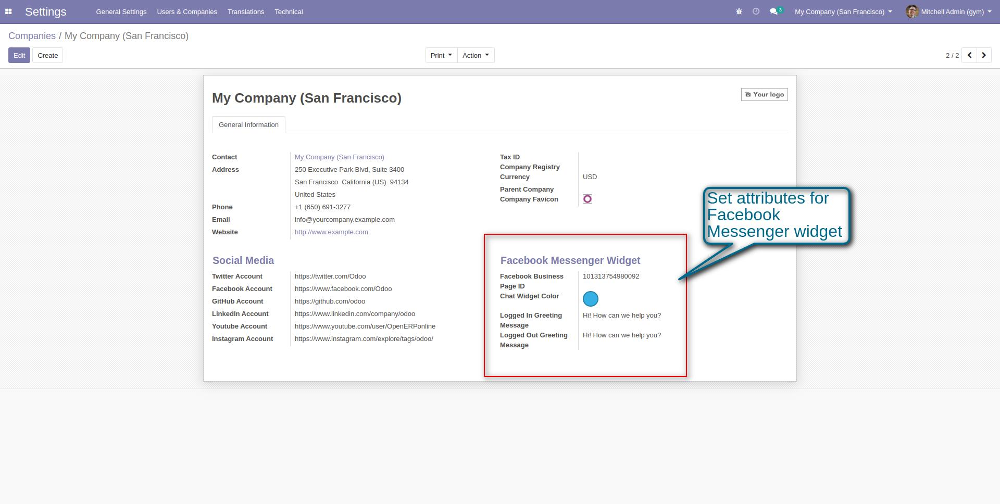
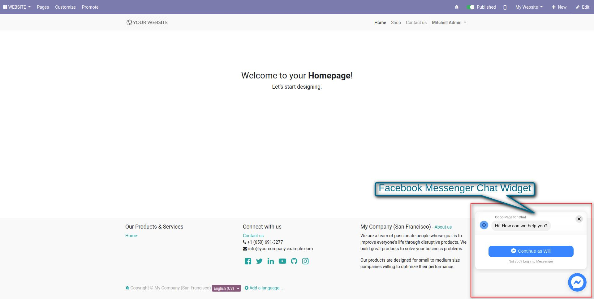

<section class="container">
    <div class="oe_styling_v8">
        <section class="oe_container">
            <div class="oe_row">
                <div class="col-sm-12">
                    <h2 class="oe_slogan text-primary text-center">Facebook Messenger Chat Integration</h2>
                    <h3 class="oe_slogan text-primary text-center">Facebook Messenger: One more way to communicate with
                        your customers</h3>
                </div>
                <div class="oe_span12">
                    <div class="card">
                        <div class="card-body">
                            <div class="alert alert-info">
                                <i class="fa fa-arrow-circle-o-right"></i>
                                <b>Few Words About The Facebook Messenger Chat Integration:</b>
                            </div>
                            <p>
                                The Facebook Messenger Customer Chat Integration plugin allows you to integrate
                                Messenger directly
                                into your business website. Customers can interact with your business at any time with
                                the same personalized experience they get in Messenger.
                            </p>
                        </div>
                    </div>
                </div>
            </div>
        </section>

        <section class="oe_container">
            <div class="oe_row">
                <div class="oe_span12">
                    <div class="card card-info">
                        <div class="card-heading mt8 text-center" style="font-size: 22px;">
                            <i class="fa fa-pencil-square-o"></i><b> Work Flow: How The Facebook Messenger Chat
                            Integration
                            Works </b>
                        </div>

                        <div class="card-body">
                            <div class="card-heading alert alert-success"><i class="fa fa-hand-o-right"></i><b>
                                Create Facebook Business Page:</b></div>
                            <ul>
                                <li>Create the facebook page</li>
                            </ul>
                            <div class="oe_row_img oe_centered">
                                <center><a href="create_page.jpg"></a>
                                </center>
                            </div>

                            <div class="card-heading alert alert-success"><i class="fa fa-hand-o-right"></i><b>
                                Get Page ID:</b></div>
                            <ul>
                                <li>Open the page</li>
                                <li>Click the "About" menu</li>
                                <li>Navigate to the page id at the bottom</li>
                                <li>Use this Page ID</li>
                            </ul>
                            <div class="oe_row_img oe_centered">
                                <center><a href="get_page_id.jpg"></a></center>
                            </div>
                            <div class="card-heading alert alert-success"><i class="fa fa-hand-o-right"></i><b>
                                Add White-listed Domains:</b></div>
                            <ul>
                                <li>Open the page settings</li>
                                <li>Click on the "Advance Messaging" menu</li>
                                <li>Navigate to the White-listed Domains option</li>
                                <li>Enter the website domains on where you want to use the messenger widget and save
                                </li>
                            </ul>
                            <div class="oe_row_img oe_centered">
                                <center><a href="set_domains.jpg"></a></center>
                            </div>

                            <div class="card-heading alert alert-success"><i class="fa fa-hand-o-right"></i><b>
                                Set Facebook Messenger Widget Attributes:</b></div>
                            <div class="oe_row_img oe_centered">
                                <center><a href="fb_conf.jpg"></a></center>
                            </div>

                            <div class="card-heading alert alert-success"><i class="fa fa-hand-o-right"></i><b>
                                Widget on Website:</b></div>
                            <div class="oe_row_img oe_centered">
                                <center><a href="fb_widget.jpg"></a></center>
                            </div>
                        </div>
                    </div>
                </div>
            </div>
        </section>

        <div class='oe_span12'>
            <h1 align="center">
                If You Need Any Help Please Contact
            </h1>
            <h3 align="center">
                Email Id: erpmstra@gmail.com
            </h3>
        </div>
    </div>
</section>
